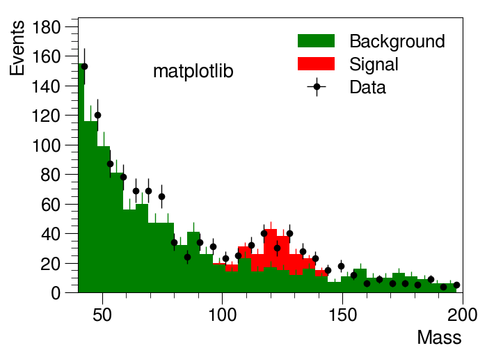
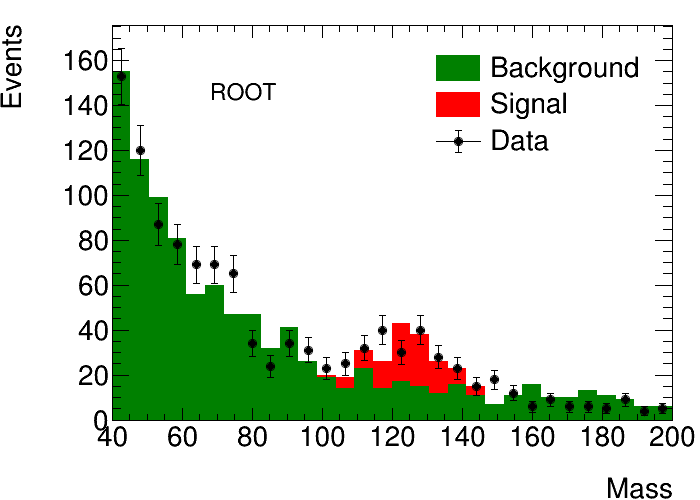

Plot a ROOT histogram with matplotlib¶
This example demonstrates how a ROOT histogram can be styled with simple attributes and displayed via ROOT or matplotlib.
 {kind=link}
{kind=link}
Python source code: plot_matplotlib_hist.py
print(__doc__)
import ROOT
import numpy as np
from rootpy.plotting import Hist, HistStack, Legend, Canvas
from rootpy.plotting.style import get_style, set_style
from rootpy.plotting.utils import draw
from rootpy.interactive import wait
import rootpy.plotting.root2matplotlib as rplt
import matplotlib.pyplot as plt
from matplotlib.ticker import AutoMinorLocator, MultipleLocator
# set the style
style = get_style('ATLAS')
style.SetEndErrorSize(3)
set_style(style)
# set the random seed
ROOT.gRandom.SetSeed(42)
np.random.seed(42)
# signal distribution
signal = 126 + 10 * np.random.randn(100)
signal_obs = 126 + 10 * np.random.randn(100)
# create histograms
h1 = Hist(30, 40, 200, title='Background', markersize=0, legendstyle='F')
h2 = h1.Clone(title='Signal')
h3 = h1.Clone(title='Data', drawstyle='E1 X0', legendstyle='LEP')
h3.markersize = 1.2
# fill the histograms with our distributions
h1.FillRandom('landau', 1000)
map(h2.Fill, signal)
h3.FillRandom('landau', 1000)
map(h3.Fill, signal_obs)
# set visual attributes
h1.fillstyle = 'solid'
h1.fillcolor = 'green'
h1.linecolor = 'green'
h1.linewidth = 0
h2.fillstyle = 'solid'
h2.fillcolor = 'red'
h2.linecolor = 'red'
h2.linewidth = 0
stack = HistStack([h1, h2], drawstyle='HIST E1 X0')
# plot with ROOT
canvas = Canvas(width=700, height=500)
draw([stack, h3], xtitle='Mass', ytitle='Events', pad=canvas)
# set the number of expected legend entries
legend = Legend([h1, h2, h3], leftmargin=0.45, margin=0.3)
legend.Draw()
label = ROOT.TText(0.3, 0.8, 'ROOT')
label.SetTextFont(43)
label.SetTextSize(25)
label.SetNDC()
label.Draw()
canvas.Modified()
canvas.Update()
# plot with matplotlib
set_style('ATLAS', mpl=True)
fig = plt.figure(figsize=(7, 5), dpi=100)
axes = plt.axes()
axes.xaxis.set_minor_locator(AutoMinorLocator())
axes.yaxis.set_minor_locator(AutoMinorLocator())
axes.yaxis.set_major_locator(MultipleLocator(20))
rplt.bar(stack, stacked=True, axes=axes)
rplt.errorbar(h3, xerr=False, emptybins=False, axes=axes)
plt.xlabel('Mass', position=(1., 0.), va='bottom', ha='right')
plt.ylabel('Events', position=(0., 1.), va='top', ha='right')
axes.xaxis.set_label_coords(1., -0.20)
axes.yaxis.set_label_coords(-0.18, 1.)
leg = plt.legend()
axes.text(0.3, 0.8, 'matplotlib',
verticalalignment='center', horizontalalignment='center',
transform=axes.transAxes, fontsize=20)
if not ROOT.gROOT.IsBatch():
plt.show()
# wait for you to close the ROOT canvas before exiting
wait(True)
Total running time of the example: 0.33 seconds